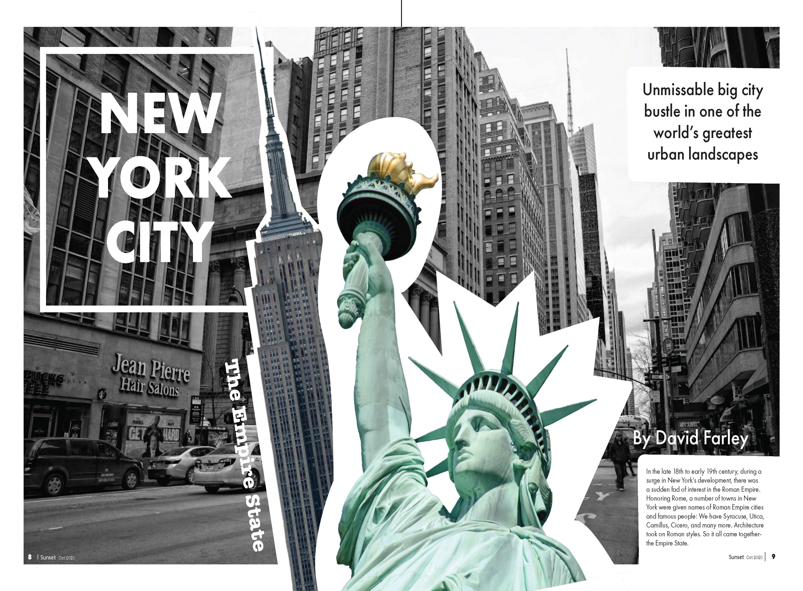

Ideation
New York is bold, bustling, and urban. I pushed for a "collage" look that related to a typical New York lifestyle. I took ideas from New York's iconic architecture such as the Statue of Liberty and the Brooklyn Bridge to add as focal points within my design. Knowing that I was going to have an eclectic design, I implemented a grid to physically have balance, alignment, and asymmetry.
